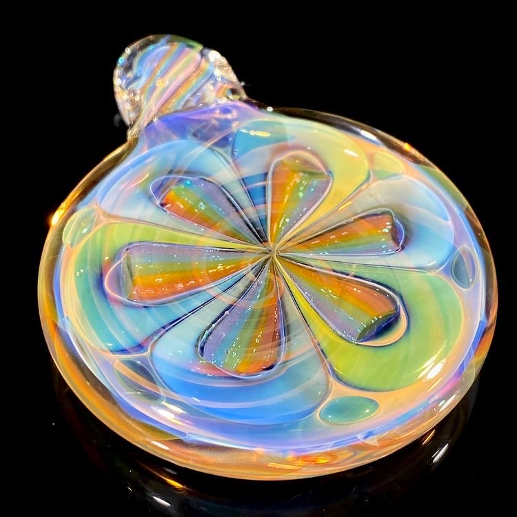

About me
Kevin is a glass artist who is enjoying a transition into a new life journey getting into coding! He still enjoys many other activities:
- Drumming/ playing fretless bass guitar
- Hiking/ camping/ backpacking
- Mushrooming/ cultivating mushrooms
- Astronomy/ astrophotography
- Writing code for helpful tools
- Working toward better health all the time
Kevin is looking forward to learning more about web development and getting some time in nature this fall!